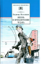

В книгу известного детского писателя входит повесть о детях, их родителях, о школе. Ее главный герой, Боря Збандуто, постоянно попадает в такие ситуации, когда надо принимать быстрые и верные решения. Для среднего школьного возраста.